ZELTGOLD / Product design
A jewellery savings product, shipped in 20 days.
A two-designer team turned a client brief into a live app and launch site under a hard deadline.
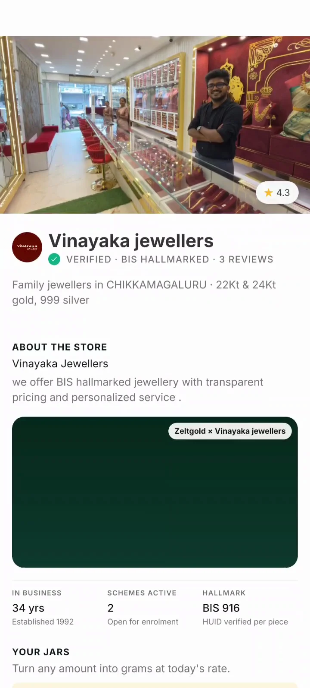
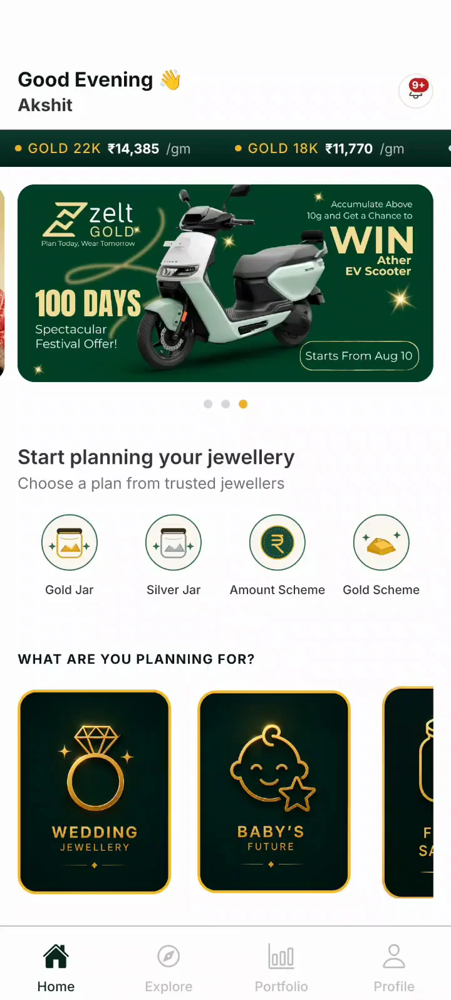
Speed was the constraint. Trust was the standard.
Jewellery savings involve real money, local relationships and long-term commitments. The timeline could compress, but clarity could not.
The product started behind a jewellery counter.
Customers were saving through paper registers, scheme cards and WhatsApp confirmations. The opportunity was not to replace trusted jewellers. It was to make that trust visible, trackable and easier to act on.
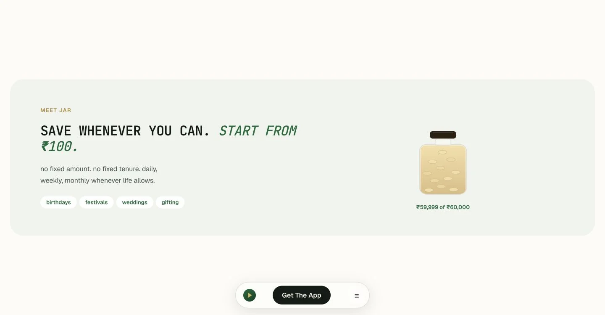
Front-load understanding. Then move fast.
The deadline forced us to remove ceremony, not discovery. We used client conversations, rapid synthesis and parallel design to reduce uncertainty early.
Start with the right questions
We sat with the client to understand existing saving habits, the role of local jewellers, payment expectations, trust barriers and the point where digital redemption meets the physical store.
- What makes customers trust a savings scheme?
- What must remain owned by the jeweller?
- Where do paper and WhatsApp records break down?
- What should happen when a payment fails?
Turn conversations into a working PRD
Claude helped structure raw conversations into a shared PRD. We reviewed every assumption, clarified the product model and used the document to keep two designers and the client aligned.
AI accelerated
Structure, synthesis and documentation
Compare systems, not just screens
Competitive analysis covered jewellery schemes, digital gold, savings products and retailer-led platforms. We compared the underlying rules instead of borrowing isolated UI patterns.
Trust model
Saving flexibility
Retailer role
Price transparency
Redemption
Failure recovery
A simple model for a complex category.
We anchored every journey in a trusted jeweller, then separated flexible saving from structured commitments.
Trusted jewellerVerification, rates and relationship
JarSave any amount in gold or silver
Retailer schemeJoin an existing jeweller plan
Custom planChoose goal, value and cadence
Portfolio and redemptionTrack digitally, redeem with the jeweller
Let intent choose the entry point.
Users could begin with a goal, a jeweller, a flexible Jar or an existing scheme. The experience brought those routes back to the same transparent product model.
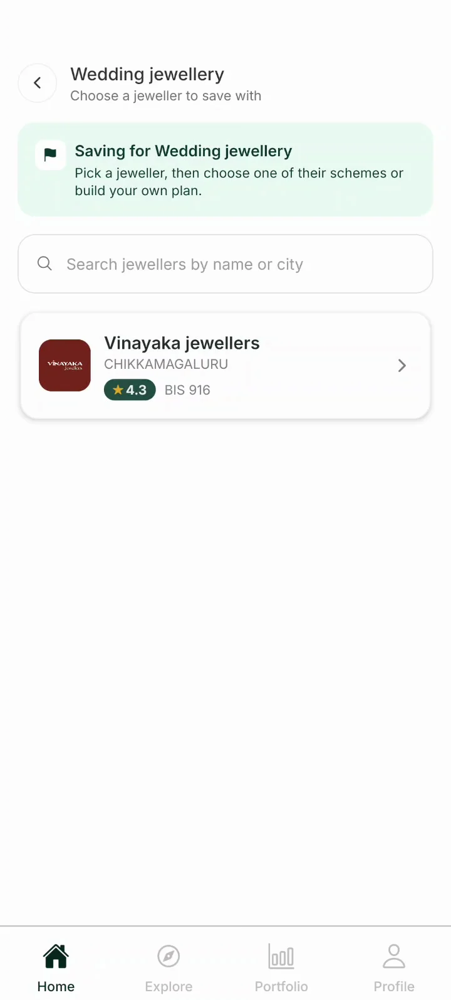
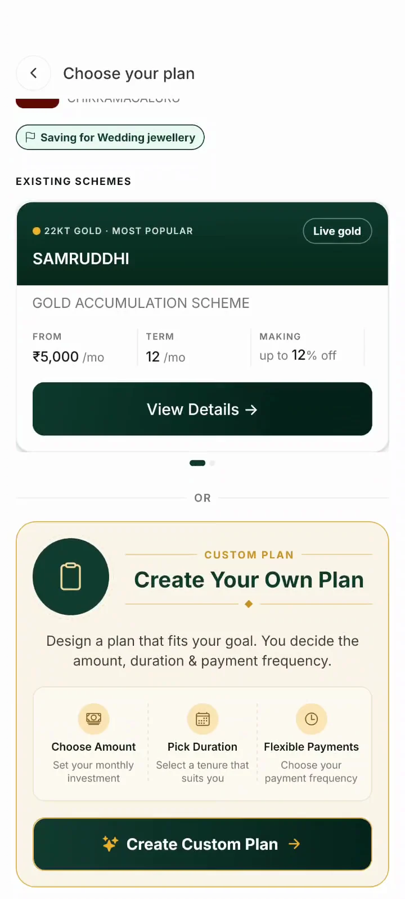
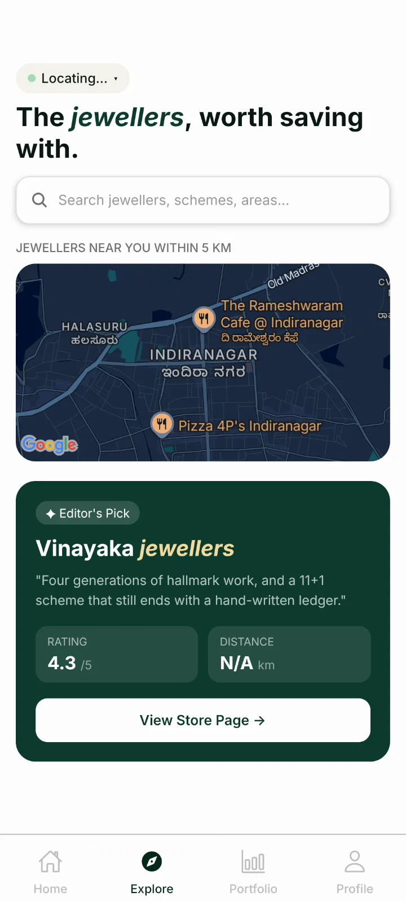
Make the commitment understandable.
Targets, duration, frequency, live rates and payment count stayed visible before users committed money.
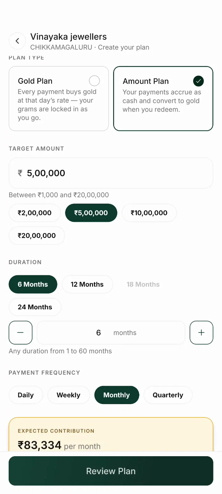
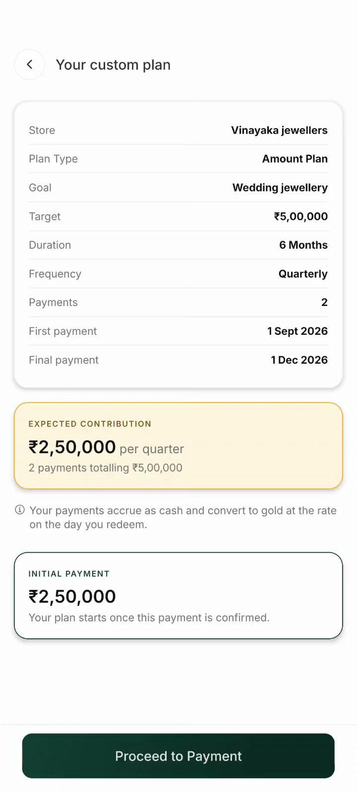
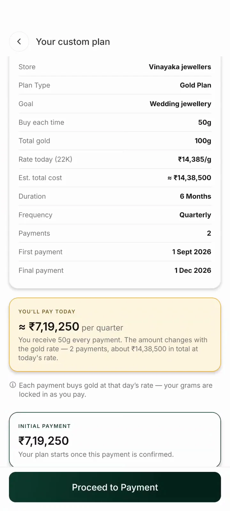
Design the failure path with the same care.
For a trust-sensitive product, a failed payment is part of the core journey. The user sees what they are buying, leaves through a familiar payment gateway and returns to a clear recovery state.
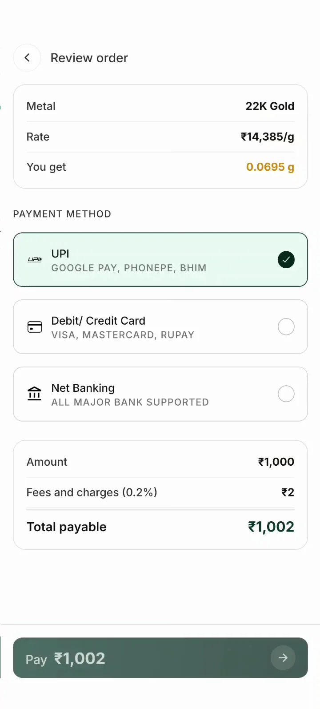
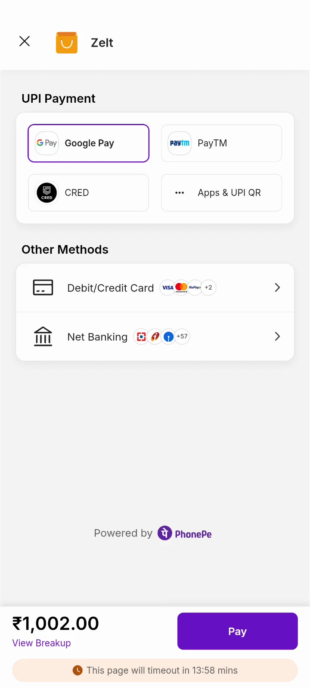
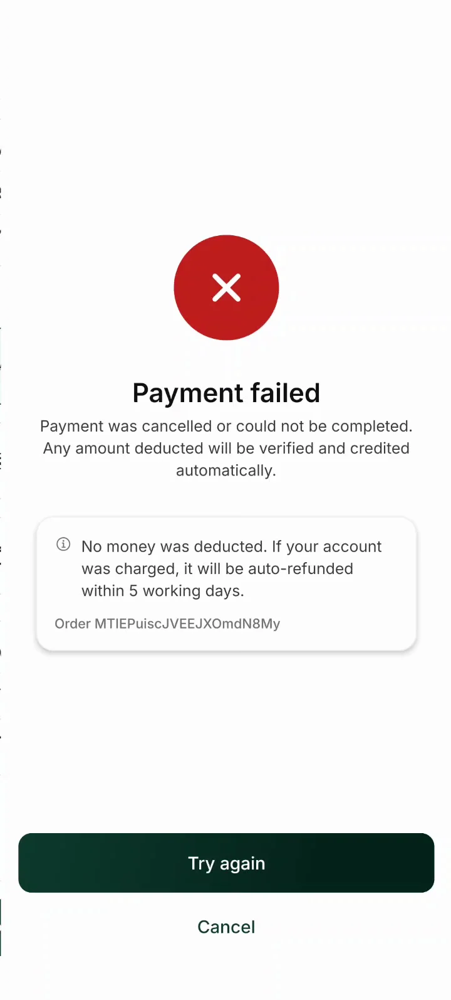
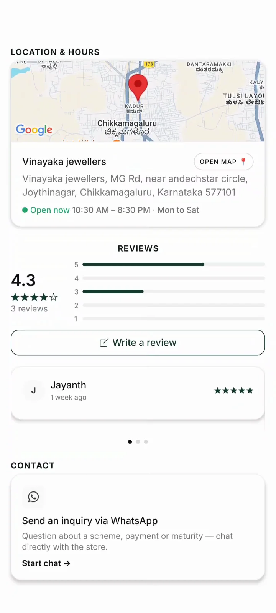
Keep the jeweller visible.
The product did not ask users to trust an anonymous wallet. Verification, store history, hallmark details, location, reviews and direct contact kept the existing relationship at the center.
Close the loop in the portfolio.
Every contribution becomes a visible holding connected to a real jeweller. Users can see what they saved and carry that value back into the physical store.
One record of truth
Store-linked holdings
Digital-to-physical redemption
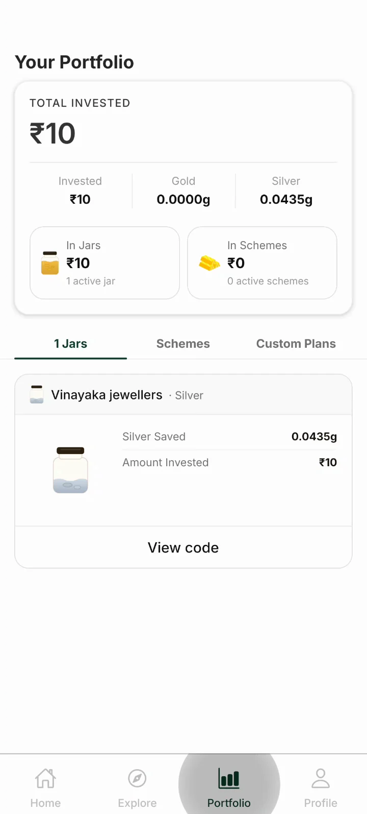
The launch site had to tell the same story.
While the app made saving operational, the website introduced the category, built credibility and connected customers and partner jewellers to the product.
Visit the live ZELTGOLD site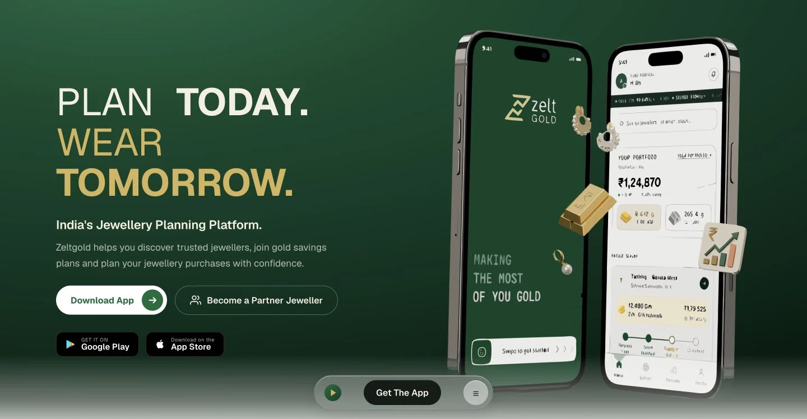
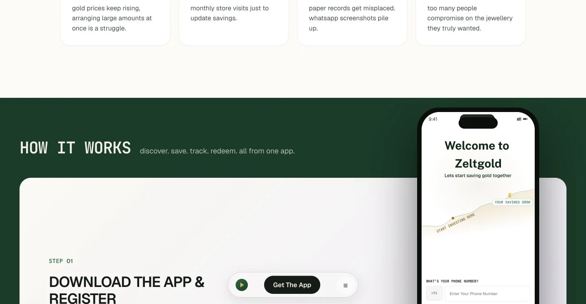
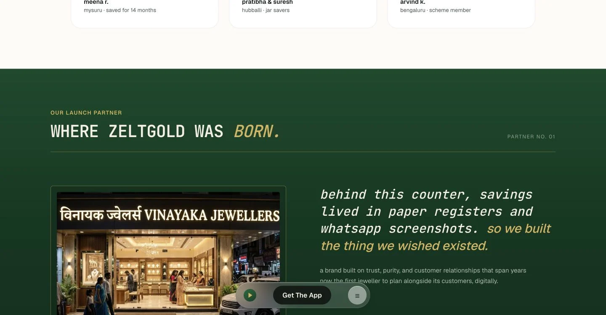
AI compressed the work around the work.
Claude Code and other AI tools reduced time spent structuring documents, organizing research and supporting production. Product judgment stayed with the design team.
AI helped us move faster
- Turn raw client conversations into a structured PRD
- Organize competitive findings into comparable dimensions
- Accelerate documentation, copy exploration and landing-page production
- Reduce repetitive implementation and handoff work
Designers stayed accountable
- Ask the questions that exposed product risk
- Define the Jar, Scheme and Custom Plan model
- Prioritize trust, transparency and recovery
- Review outputs, resolve trade-offs and decide what shipped
What 20 days made possible, and what it exposed.
We shipped a coherent app and a live launch site. The compressed timeline also revealed where the next round should focus.
Simplify the product language
Jars, amount schemes, gold schemes and custom plans need a clearer first-time mental model.
Make Home state-aware
Returning users should see progress and the next payment before long educational content.
Strengthen high-value safeguards
Large commitments need proportional confirmation, KYC preflight and price-volatility context.
Harden location and recovery
Fallback retailer results and alternate payment methods should be clearer when systems fail.
Delivered in 20 days
Fast did not mean careless. It meant deciding what mattered.
A mobile product, a launch site and a reusable trust model for jewellery saving.